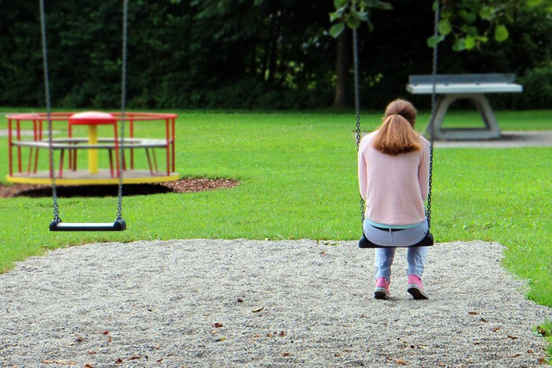

Pakar UB: Mahasiswa yang Punya Banyak Teman Bisa Kesepian Juga, Ini Sebabnya
Jakarta - mahasiswa yang aktif mengikuti kegiatan kampus biasanya dianggap mempunyai banyak teman. Namun, nyatanya beberapa darinya merupakan bisa merasakan kesepian juga.nyatanya beberapa dari merupakan bisa merasakan kesepian juga.
Fakta tersebut diungkap oleh dosen Departemen Psikologi Universitas Brawijaya (UB) Ari Pratiwi. Ia mengatakan mahasiswa yang melakukan konsultasi kepadanya ternyata memiliki banyak aktivitas dan aktif di lembaga kemahasiswaan.Brawijaya (UB) Ari Pratiwi. Ia mengatakan mahasiswa yang melakukan konsultasi kepadanya ternyata memiliki banyak aktivitas dan aktif di lembaga kemahasiswaan.